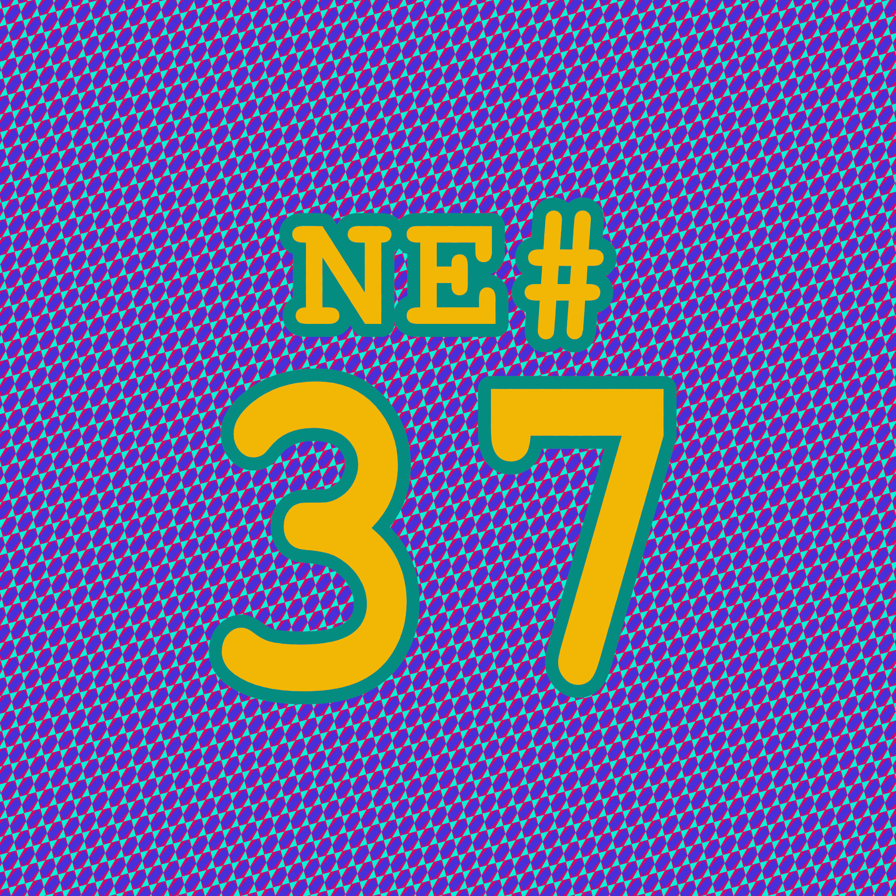
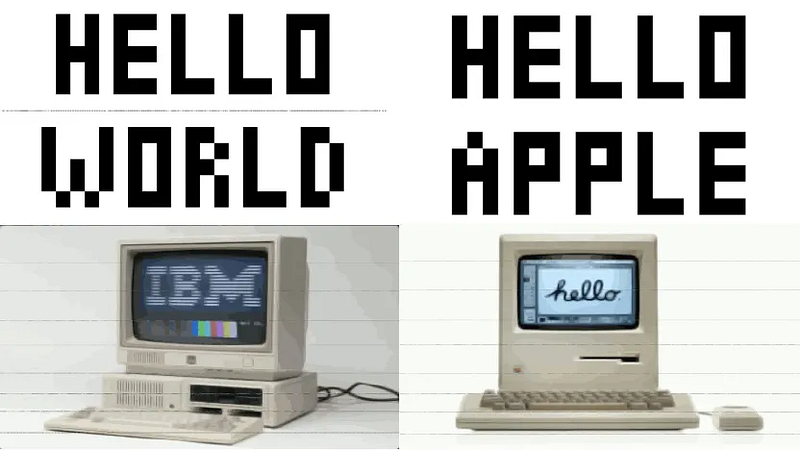

Die Nerd Enzyklopädie 36 - Mehrdeutige Bilder
Mehrdeutige Bilder

Ein Bild ist ein Bild ist ein Bild. Ob in der realen Welt oder auf dem Computer. Oder? ODER? Du ahnst es schon: Die Sache hätte keinen Haken, wenn ich es nicht so betonen würde.
Ein Bild auf dem Computer muss „interpretiert“ werden, denn schließlich handelte sich dabei um nichts anderes als eine Datei voller verrückter Zeichen — Nullen und Einsen. Es gibt verschiedene Formate, um Bilder in Dateien zu speichern, allen voran JPG, GIF und PNG.
Per Definition besteht eine PNG-Datei aus vielen kleinen Chunks (“Stücken”), die unterschiedliche Informationen enthalten, um das Bild aufzubauen. Dazu gehören z.B. die Farbpalette, die tatsächlichen Bild-Daten, Meta-Daten und so weiter [EINS1].
Zwar folgt PNG einem fest definierten Standard, aber wie es mit Standards so ist: Jeder kocht sein eigenes Süppchen. So auch Apple. Dort hat man für die eigenen Zwecke einen zusätzlichen Chunk names iDOT eingeführt. Um diesen zu verarbeiten, greifen Apple-Geräte auf einen nur dafür entwickelten Algorithmus zurück, der die Informationen aus dem iDOT-Chunk nutzbar macht. Apple hat die Funktion von iDOT nicht öffentlich dokumentiert und so ist der Zweck nicht ganz klar. Anonymen Hinweisen nach soll damit aber die optimierte Verarbeitung der Bilddaten auf Mehrkern-Prozessoren im Vordergrund stehen [HACK1].
Ende 2021 fand David Buchanan heraus, dass dieser Algorithmus fehlerbehaftet ist und sich die Bild-Datei so manipulieren lässt, dass das Bild auf einem Apple-Gerät anders dargestellt wird als auf einem Windows-Computer. Und das sieht dann so aus:

Das gleiche PNG-Bild, dargestellt auf einem nicht-Apple-Computer (links) und auf einem Apple-Computer (rechts) [DAVI1]
Apple den Bug mittlerweile „leider„ behoben…